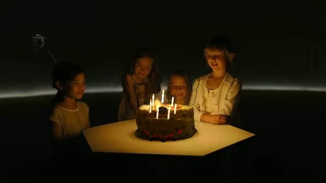
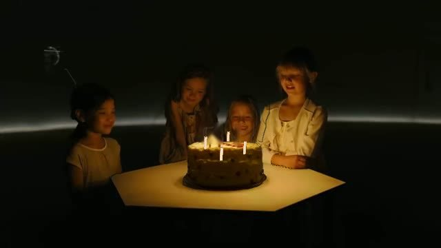
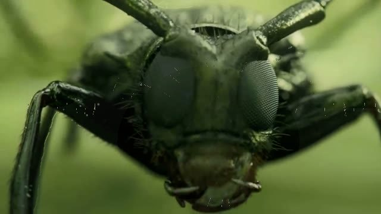

STELLINE HAND ORB · PROOF
Version 5 of the memory orb, and how it was checked against the film by a critic who was never told which image was which.
OPEN THE ORBWATCH A HAND BUILD THE BIRTHDAYWATCH A HAND BUILD THE BEETLEWhat it is
The film is at the top and the orb sits below it. Every control is on the orb: five rings, ten buttons, two small screens and a glass strip. There is nothing laid over the film.
The clip is cut into 48 shots, and every shot is split into named parts: K, Ana, the beetle, the cake, the table, the children, the viewer and the walls. The part names become the labels on the rings, and the shot's light sets the tint of the metal. Turning a ring changes what the film shows.
Open hand-orb.html?orb&room=CODE on a phone, or scan the code on the orb's left screen, and the phone becomes the orb. Tap the left screen to use your camera instead: pinch on a ring and roll your wrist to turn it. Hold BUG or BIRTHDAY to watch a simulated hand do the whole build.
How the model is made
Each shot is rebuilt from its own pixels. The painted-out frame is the back wall, shaped by the shot's depth, and each cut part stands forward as relief. Every vertex is placed along its own ray from the film's camera, so from that camera the model is exactly the frame.
The builders' things (the beetle, the cake, the table) are models made from named anatomy: facets, setae, crumb and flutes. FIT lets the film place each one by turning its position, size and tilt until its outline covers its cut part. The film's pixels are then baked onto its surface (FILM SKIN), so when you bend it the picture bends with it.
The blind critic, six rounds of pairs
Each round, a fresh critic saw pairs (one real frame, one render from a slightly moved camera) and said which was real. The fixes after each round were all in the model, the matte or the camera, never in hiding evidence.
| Round | Critic right | Main tells | What was changed |
|---|---|---|---|
| 1 | 12 / 12 | black wedges, flat painted patches, halos, toy beetle | vertices along their own ray; plate only under people; a light bug that dimmed every part |
| 2 | 10 / 10 | missing image at the edges, seams | the back wall runs past the frame; walls and floors join the back |
| 3 | 12 / 12 | mirrored borders, matte lines, softness | feathered mattes, a lens finish, the camera narrows as it moves |
| 4 | 12 / 12 | outlines at depth edges; compression grid | mattes pulled in; the frame itself fills small moves (the compression grid was left alone) |
| 5 | 7 right, 4 wrong, 1 unsure | hard edges on defocused things, doubled flames | wider feather where the film is soft; plate only deep inside a figure |
| 6 | 0 / 14 | it took the render for the real frame every time | it read the moved camera's tighter framing backwards; 7 pairs it rated a coin flip |
One image at a time
Because pairs let the critic compare framing, the last test showed 27 single images: 12 model renders from a moved camera, 12 real frames from other shots, and 3 changed memories.
| Image | Called real | Called reconstruction |
|---|---|---|
| real film frames | 12 of 12 | 0 |
| 3D model of a shot, moved camera | 11 of 12 | 1 (the cake in the dark: grey flames, no shadow) |
| changed memories (7 candles, candles blown out, setae grown) | 0 of 3 | 3: flameless candles in a lit room, white flecks of hair, one eye smooth and one faceted |
The model of the film passes. Memories the user changes do not pass yet. The next work is new things lit by the film's light (a blown candle should darken the room), and hairs and facets that match what the camera actually resolved.
Model renders from a moved camera (tap to see the real frame)
Changed memories


